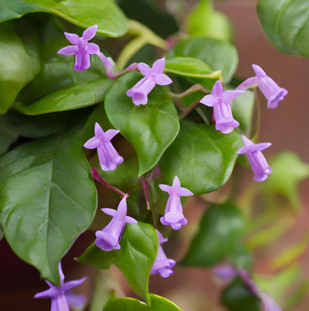

Flora

Description: The Terra Vine is a climbing plant with thick, succulent leaves and delicate tendrils that reach out to grasp nearby surfaces. It produces clusters of small, bell-shaped flowers that exude a sweet, floral scent.They are found in the shaded understory of Terra Nova's forests, where they climb trees and rocky outcrops in search of sunlight. Terra Vines have a relatively long lifespan, persisting for several standard Terran years as they slowly creep and twine their way through the forest canopy.
Planet: Terra Nova